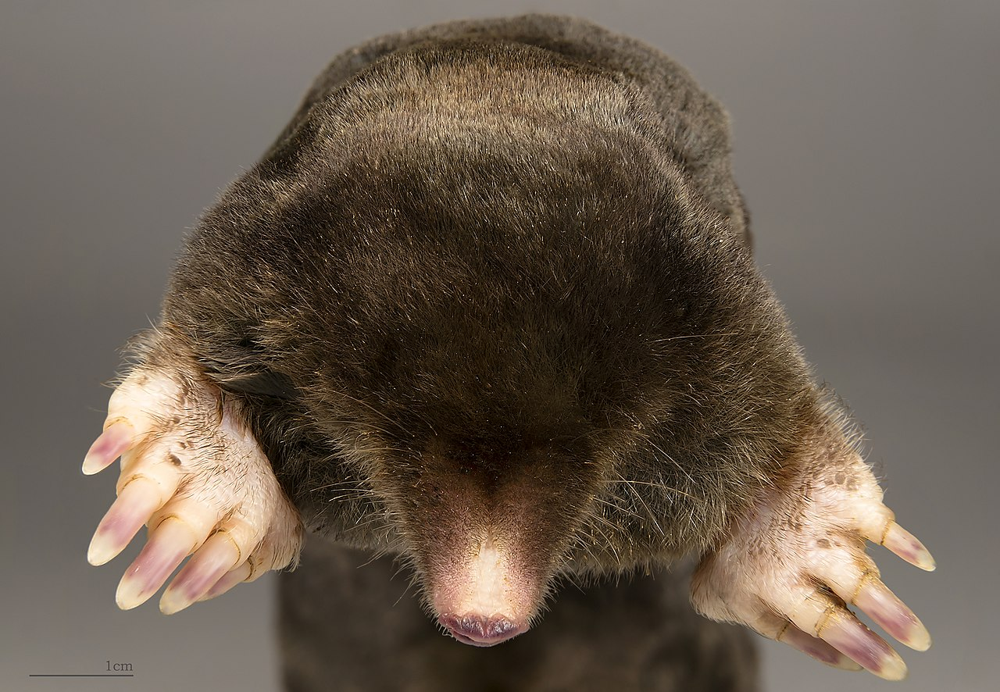

Krtek obecný (Talpa europaea, Linné, 1758) je menší černý hmyzožravec, vyskytující se na polích, loukách, v parcích a zahradách. Žije několik decimetrů pod zemí. Buduje chodby – jednak obytné, jednak okružní, ve kterých loví potravu. Při tom tvoří na povrchu typické hromádky zeminy, zvané krtinec či krtina.
Krtek má válcovité tělo, okolo 12 cm dlouhé. Samice jsou obvykle menší. Oči má malé a skryté za chlupy a zrak má proto špatný, ale slepý není. Naopak sluch a čich má vyvinutý. Uši jsou jen malými výstupky v kůži. Srst má obvykle tmavě hnědou, ale protože díky životu pod zemí nejsou ani jiné barvy znevýhodněny, vyskytuje se celá řada odstínů.
Krtek má přední tlapky dobře uzpůsobené k hrabání; jsou svalnaté, vyvrácené a s velkými drápky. Na předních tlapkách má 10 „prstů“. Zadní nohy jsou menší, ocas jen 2 až 4 cm dlouhý.
Hloubí dva typy tunelů – těsně pod povrchem v době, kdy pátrá po samičkách. V hloubce 5–20 cm pak tunely, ve kterých žije a skladuje potravu. Délka tunelů může být až několik stovek metrů.[2]
Dožívá se 2 až 5 let.
Živí se převážně bezobratlými živočichy, které vyhledává pomocí sluchu a čichu a vyhrabává je ostrým čumáčkem. Mezi jeho potravu patří například hmyz a jeho larvy, ještěrky, ale dokonce i žáby a myši. Žížaly ochromuje kousnutím do nervového centra a skladuje je jako zásoby na horší časy. Denně dokáže spotřebovat téměř tolik potravy, co sám váží.